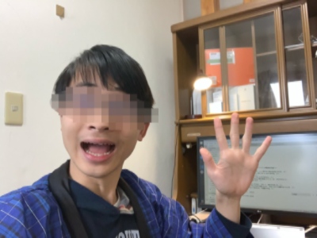

<!DOCTYPE html>
<html>
<head>
    <meta charset="UTF-8">
    <meta name="viewport"　content="width=device-width,user-scalable=no">
    <title>【よっそゲー2】フライゴンの運勢買収初詣</title>
    <script>
        window.onload = function(){
            var logdiv = document.getElementById("logdiv");
            setTimeout(function(){
                logdiv.innerHTML=
"[よっそゲームプロジェクト第2弾]フライゴンの運勢買収初詣<br>\
<br>\
あけましておめでとうございますが、ここで新年早々残念なお知らせです。<br>\
あなたがもし、この文章を問題なく表示できているのであれば、<br>\
あなたの運勢は「<span id='daikyo'>大凶</span>」です。<br>\
残念ながらこのゲームをプレイすることはできません。<br>\
このゲームのプログラムが、あなたの動作環境(デバイス・OS・ブラウザ)に<br>\
対応できていない可能性があります。<br>\
<br>\
このゲーム、「PCでもスマホでもプレイできる」って銘打っちゃったんです。<br>\
なのでこの不具合には、製作者よっそも深く、ふか〜く、悩まされました。<br>\
でもダメだったんです。PCとiPadでは動いたのに、iPad miniでは動かないんです。<br>\
調べても調べても解決法なんて出てやきません。フシギダネ！<br>\
<br>\
でも諦めないでください。手間こそかかりますが、解決策はあります。<br>\
1.デバイスを変える (特に、PCなら確実に動くと思われる) <br>\
2.ブラウザを変える (望み薄) <br>\
3.普通に初詣に行く <br>\
<br>\
怖い思いをさせてごめんなさい。<br>\
あなたのご健闘と、この一年の安泰を深く願います。<br>\
それでは。 よっそ<br>\
</img>";
            }, 2000);
        }
    </script>

    <script src="./enchant.min.js"></script>
    <script src="./resources/generator/stagedata.js"></script>
    <script src="./main.js"></script>

    <style>
        body {
            margin: 0;
            padding: 0;
            
        }

        canvas{
            align-self: center;
        }

        div#logdiv{
            position: absolute;
            z-index: -1;
        }

        #daikyo{
            color: rgb(0,0,200);
        }

    </style>
</head>
<body>
    <div id="logdiv">
    </div>
</body>
</html>

